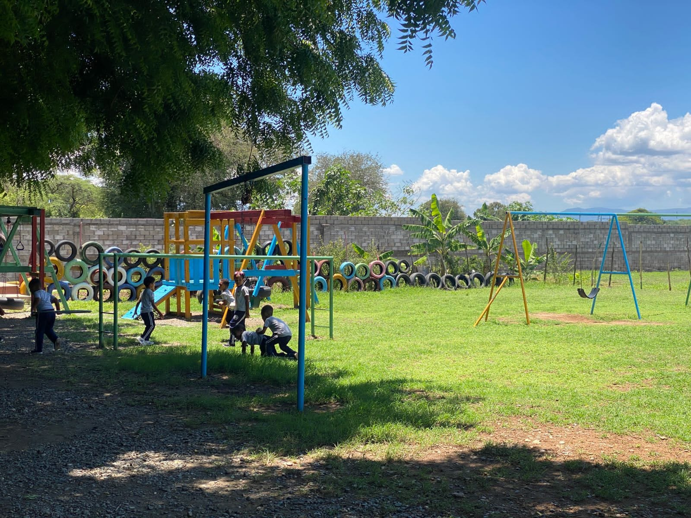
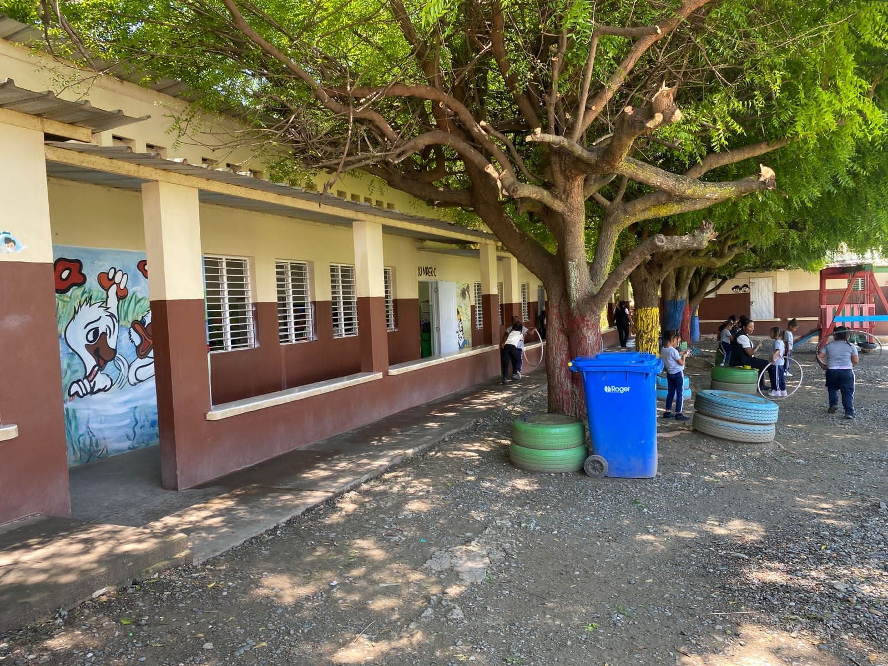
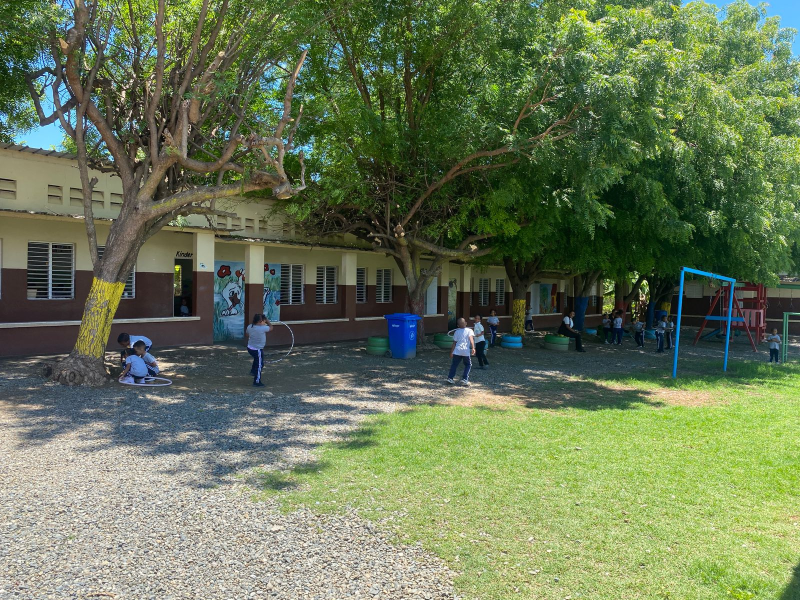

¡Bienvenidos al Centro Cristiano de Educación para el Desarrollo!
Nivel Inicial y Primaria
En nuestra primaria, cultivamos un ambiente seguro, acogedor y lleno de valores que forman a niños felices, responsables y con ganas de aprender. Aquí, cada niño es único y recibe la atención personalizada que merece para desarrollar su máximo potencial académico, social y espiritual.
Al elegir nuestra primaria, estás brindando a tu hijo un espacio donde crecerá en conocimiento, fe y confianza, preparándose para un futuro lleno de oportunidades y éxito. ¡Únete a nuestra familia educativa y acompáñanos a formar a los líderes del mañana!



Área verde de nuestro centro
Un espacio natural lleno de vida y tranquilidad, donde el verde de los árboles y plantas invita a la reflexión, el descanso y el aprendizaje al aire libre. Aquí, cada rincón es un refugio de paz que inspira a estudiantes y docentes a cuidar y valorar el entorno que nos rodea.


Nivel Secundario


En esta etapa fundamental, acompañamos a nuestros estudiantes en el camino hacia su madurez académica, emocional y espiritual, brindándoles las herramientas necesarias para enfrentar los retos del mundo actual con fe, responsabilidad y liderazgo.
Invitamos a las familias a ser parte activa de esta comunidad educativa que forma no solo estudiantes, sino ciudadanos íntegros y comprometidos con un futuro mejor.

Patio Escolar
Un espacio natural lleno de vida y tranquilidad, donde el verde de los árboles y plantas invita a la reflexión, el descanso y el aprendizaje al aire libre. Aquí, cada rincón es un refugio de paz que inspira a estudiantes y docentes a cuidar y valorar el entorno que nos rodea.


Técnico Profesional
Área de Informática
Técnico en Desarrollo y administración de aplicaciones informáticas
"La informática transforma ideas en soluciones que cambian el mundo"

El Área Técnica de Informática está orientada a formar profesionales capaces de diseñar, implementar y mantener sistemas informáticos, desarrollando habilidades en programación, redes, soporte técnico y seguridad digital.
- Encargados: Pedro Luis Valenzuela y Santos Mateo
- Ubicación: Edificio Tec. Profesional, aulas y laboratorios de Informática
- Certificaciones: Técnico en Desarrollo y administración de aplicaciones informáticas
- Especialidades: Programación y Redes
- Prácticas Profesionales: Convenios con empresas tecnológicas locales
- Año de Creación: 1996
- Horario de Atención: Lunes a viernes, 8:00 AM a 2:30 PM


Área de Enfermería
Técnico en Cuidados de enfermería y promoción de la salud
"Donde hay amor por la enfermería hay amor por la humanidad"

El Área Técnica de Enfermería prepara a los estudiantes para desempeñarse en centros de salud, hospitales, clínicas, escuelas y en la comunidad. Aprenden a realizar cuidados básicos, asistir en emergencias, colaborar en campañas de salud y ofrecer apoyo emocional tanto a pacientes como a sus familias. El enfoque es integral, promoviendo hábitos saludables y el autocuidado desde la etapa escolar.
- Encargados: Damiana Contreras y Kenia de la Rosa
- Ubicación: Edificio Tec. Profesional, aulas de Enfermería
- Certificaciones: Técnico en Cuidados de enfermería y promoción de la salud
- Especialidades: Cuidados en enfermería, promoción para la salud y primeros auxilios
- Prácticas Profesionales: Clinicas y hospitales pertenecientes a la región
- Año de Creación: 1996
- Horario de Atención: Lunes a viernes, 8:00 AM a 2:30 PM


Área de Contabilidad
Técnico en Gestión administrativa y tributaria
"La contabilidad es el lenguaje de los negocios y la clave para construir un futuro sólido"

El Área Técnica de Enfermería prepara a los estudiantes para desempeñarse en centros de salud, hospitales, clínicas, escuelas y en la comunidad. Aprenden a realizar cuidados básicos, asistir en emergencias, colaborar en campañas de salud y ofrecer apoyo emocional tanto a pacientes como a sus familias. El enfoque es integral, promoviendo hábitos saludables y el autocuidado desde la etapa escolar.
- Encargados: Cristal y Sabrina
- Ubicación: Edificio Tec. Profesional, aulas de Contabilidad
- Certificaciones: Técnico en Cuidados de enfermería y promoción de la salud
- Especialidades: Cuidados en enfermería, promoción para la salud y primeros auxilios
- Prácticas Profesionales: Clinicas y hospitales pertenecientes a la región
- Año de Creación: 1996
- Horario de Atención: Lunes a viernes, 8:00 AM a 2:30 PM